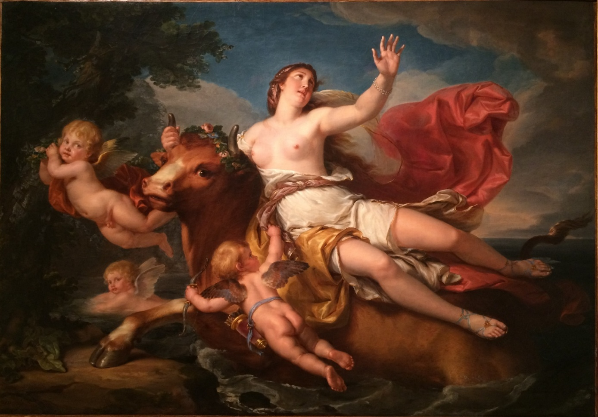

Portfolio n°2 – Masculin, féminin
Amours, amants, amantes
Note relative à l’appellation des divinités dans l’analyse qui suit
Les œuvres évoquées ci-dessous représentent un élément de la mythologie grecque (qui a ensuite été repris par Ovide, un poète latin). Il a donc été choisi de nommer les différentes divinités avec leurs noms grecs. Ainsi Zeus correspond à Jupiter, Hermès à Mercure et Éros à Cupidon.
Carte d’identité
|
|
Antique |
Moderne |
|
L’Enlèvement d’Europe (détail d’une fresque de la Villa Poppaea à Oplontis, province de Naples) |
L'Enlèvement d'Europe |
|
|
Artiste |
Inconnu |
Bernard d'Agesci (pseudonyme d'Augustin Bernard, un peintre français) |
|
Technique |
Peinture murale |
Huile sur toile |
|
Format |
Inconnu, fragment d’une fresque |
H. 95 ; L. 136 (sans cadre) / H. 116 ; 157 (avec cadre) |
|
Lieu de conservation |
Villa Poppaea à Torre Annunziata (actuelle Oplontis) |
Musée Bernard d'Agesci, Niort |
|
Ier siècle après J.-C. |
Vers 1785 – 1788 |
|
|
Date/lieu de découverte |
Villa Poppaea à Oplontis, province de Naples ; fin XXe siècle |
|
Analyse
Œuvre antique
Description

Cette œuvre est un détail d’une peinture murale datant du Ier siècle après J.-C. nommée L’Enlèvement d’Europe. Son artiste est inconnu, elle a été découverte à la fin XXe siècle lors de fouilles archéologiques dans le caldarium d’une villa romaine, la Villa Poppaea à Torre Annunziata, dans la province de Naples. Cette villa était située durant l’Antiquité sur le site d’Oplontis, enseveli par l’éruption du Vésuve en 79. Elle a très probablement appartenu à Poppée, la seconde épouse de Néron, et cette œuvre y est encore conservée.
Elle représente Europe sur le dos de Zeus, métamorphosé en taureau. Dans la mythologie grecque, Europe est une princesse phénicienne, fille d'Agénor, le roi de Tyr. Cette peinture est inspirée d’un épisode des Métamorphoses d'Ovide, qui relate l’enlèvement d’Europe par Zeus. En effet, ce dernier en est tombé amoureux et, la voyant jouer au bord de la mer, il demande à Hermès de chasser vers elle un troupeau de taureaux. Il se métamorphose ensuite en un beau taureau blanc et se mélange au troupeau. Europe l’aperçoit, s’approche de lui et lui offre des fleurs. Elle finit par s’installer sur son dos. Il en profite alors pour l’emmener au large. Prise de peur, elle ne peut rien faire et regarde le rivage s’éloigner. Zeus l’emmène en Crète et lui révèle son identité.
Le regard du spectateur est d’abord attiré par la tête d’Europe puis par son corps. Ses cheveux sont courts, tressés, et son visage est assez peu expressif, elle ne semble pas inquiète. Sa tête est de profil, mais elle paraît regarder de côté le spectateur. Elle a le teint mat, et est vêtue d’un drap qui couvre uniquement ses parties intimes.
Le regard est ensuite attiré par le taureau, qui est en fait Zeus, sur lequel elle est assise. Il est peint en bleu-gris clair, avec de petites cornes. Sa tête est levée, mais l’usure de la roche empêche de voir son expression. Ses pattes avant sont projetées vers l’avant comme s’il s’élançait. Ses pattes arrière sont peu visibles, car la peinture est très abîmée à cet endroit-là, mais elles paraissent repliées contre son ventre.
Derrière le taureau, on aperçoit ce qui ressemble à une queue de poisson. Elle semble avoir été effacée puis recouverte de pigments rouges constituant le fond de la peinture. On peut supposer que la commande a changé au cours de la création de l’œuvre, ou que la peinture recouvre une œuvre plus ancienne. Cependant, les archéologues s’accordent sur le fait qu’il s’agit bien de l’enlèvement d’Europe.
Cette dernière est assise sur le dos du taureau, une jambe de chaque côté. Son bras gauche est placé à l’arrière et sa main droite est posée sur sa tête.
Le fond de l’image est rouge orangé et tire sur l’or en haut. Ces couleurs chaudes contrastent avec celles des personnages, plus froides. La roche est fissurée et abîmée ce qui rend certains détails difficiles à distinguer.
Analyse
Cette œuvre se trouvait dans le caldarium d’une villa romaine (la partie des thermes où l'on prenait des bains chauds) et avait uniquement une fonction décorative. Elle était certainement assez petite et faisait partie d’un grand ensemble d’ornements muraux.
Elle n’a pas de place importante dans l’histoire de l'art, car elle a été découverte très récemment.
Son peintre devait probablement réaliser plusieurs petites peintures décoratives et a choisi de peindre un évènement de la mythologie grecque, rappelant le mélange des cultures entre les peuples grecs et romains. C’est d’ailleurs Ovide, un poète latin, qui a rendu ce mythe célèbre dans les Métamorphoses.
Je trouve cette œuvre intéressante car elle illustre la représentation que se faisaient les latins de l’amour entre les dieux et les mortels : Europe semble insouciante pendant que Zeus l’emmène au loin. L’artiste a représenté ce dernier les jambes élancées vers l’avant, donnant l’impression de sauter par-dessus quelque chose, comme s’il s’amusait à gambader.
Œuvre moderne
Description

Cette œuvre est une huile sur toile nommée L'Enlèvement d'Europe. Elle a été peinte entre 1785 et 1788 par Bernard d'Agesci, de son vrai nom Augustin Bernard, un peintre français. Il a peint des portraits, des œuvres religieuses et des sujets mythologiques, et il s’inscrit dans le mouvement néo-classique. Cette peinture mesure 95 cm de haut sur 136 cm de long, et elle est conservée au Musée Bernard d'Agesci à Niort.
Elle représente également Europe sur le dos de Zeus, et est inspirée du même mythe que l’œuvre antique. Ces deux œuvres sont d’ailleurs homonymes.
Le regard du spectateur est d’abord attiré par la tête d’Europe. Ses cheveux bruns sont coiffés d’un collier de perles. Son visage est tourné vers le ciel, et sa main gauche est levée vers le haut. Elle semble implorer quelqu’un dans le ciel, certainement un dieu, ce qui est paradoxal car le taureau qui l’enlève est le roi des dieux, mais elle ne le sait pas encore.
Elle est seulement vêtue d’une tunique blanche, rose et dorée. Elle a la peau claire et illuminée. Elle porte des sandales richement ornées et des bracelets à ses bras, ce qui confirme sa richesse : c’est la fille d’un roi.
Le regard est ensuite attiré par le taureau sur lequel elle est assise. Contrairement au mythe, il est brun, et non blanc. Sa tête est éclairée et coiffée d’une couronne de fleurs et de deux petites cornes. Son visage, tourné vers le spectateur, semble paisible et peu expressif.
Son arrière-train est dans la mer qui remplit le coin inférieur droit de la peinture. Sa patte avant droite est posée sur le rivage, et il semble se hisser sur la terre ferme. Il semblerait donc que l’œuvre représente la fin du mythe, quand ils arrivent en Crête avant que Zeus lui révèle son apparence.
On voit également autour du taureau des putti. Ce sont des enfants nus et ailés figurant dans les représentations artistiques. Ils sont inspirés des Amours antiques dans l'art de la Grèce et de la Rome antique, et symbolisent l'amour. Celui au premier plan porte un arc et un carquois, ce qui fait référence au Dieu Éros (Cupidon pour les latins), le dieu de l’amour. On en voit un deuxième au second plan qui semble laisser flotter derrière lui un grand drap rouge, passant derrière Zeus et Europe. On ne connait pas la signification de ce drap, peut-être que le peintre voulait faire ressortir les personnages centraux. Enfin, un troisième putto nage au fond de l’œuvre dans la mer.
Ces putti rappellent que Europe est là à cause de l’amour de Zeus, et montrent que cet amour occupe une place centrale dans l’œuvre. De plus ce sont les seules divinités réellement visibles dans l’œuvre, Zeus n’étant pas reconnaissable sous les traits d’un taureau
Enfin, on voit à gauche de l’œuvre le rivage certainement crétois sur lequel Zeus s’appuie. Il est de couleur marron foncé et on distingue un arbre dans l’ombre.
A l’arrière-plan le ciel est bleu foncé avec des nuages gris.
On a donc des couleurs foncées dans le fond qui font ressortir les personnages centraux, plus illuminés. L’artiste met plus l’accent sur l’amour de Zeus que sur le moment précis du mythe.
Analyse
Cette œuvre est peu connue et l’on possède donc très peu d’informations dessus. On ne sait en effet pas dans quel contexte et pour qui elle a été réalisée. Cependant on peut supposer qu’elle avait uniquement une fonction décorative.
Cette peinture est, comme les autres œuvres de Bernard d'Agesci, peu connue. En effet l’artiste est tombé dans l’oubli après sa mort, alors qu’il a eu une influence très importante dans le domaine culturel et artistique de la ville de Niort, sa ville natale. La place de cette œuvre dans l’histoire des arts est donc peu importante et aucun artiste ne dit s’en être inspiré. On sait cependant qu’elle est le probable pendant de la peinture Acis et Galatée du même artiste, conservée à l'Art Museum de Berkeley. Acis et Galatée sont deux amants de la mythologie grecque dont la légende est également rapportée dans les Métamorphoses d’Ovide.
Les intentions du peintre sont inconnues, on peut supposer qu’il répondait à une commande. Il s’est beaucoup inspiré de l’art et des mythes antiques, s’inscrivant dans une esthétique néo-classique, qui est caractérisé par la volonté d'un retour aux sources de l'art, que les théoriciens croyaient être d'origine antique, dans l'art grec, étrusque et romain.
Je trouve cette œuvre très intéressante car elle représente l’amour entre les dieux antiques et les mortels d’un point de vue moderne, où le polythéisme a disparu. Zeus est représenté par un taureau grand et fort, et l’artiste prend quelques libertés vis-à-vis du mythe original en le peignant brun et non blanc. Il semble peu soucieux d’Europe qu’il vient d’enlever. Elle regarde vers la mer, certainement vers l’endroit d’où Zeus l’a emportée, et semble supplier quelqu’un, peut-être un dieu. En effet elle ne sait pas encore que le taureau qui vient de l’enlever est Zeus. Les putti rappellent la présence de la divinité et permettent de comprendre qu’il s’agir du mythe de l’enlèvement d’Europe. Je trouve donc très intéressant qu’un artiste moderne représente ce mythe antique.
Comparaison
|
ANTIQUE |
MODERNE |
|
Points communs |
|
|
Ces deux œuvres représentent toutes deux le même mythe, celui de l’enlèvement d’Europe. Elles portent toutes deux ce nom-ci. Europe est représentée assise sur Zeus qui est métamorphosé en taureau. Ce dernier ne regarde pas sa victime et est indifférent à ses réactions dans les deux œuvres. |
|
|
Différences |
|
|
Peinture murale ancienne de petits format, avec donc la roche qui s’est dégradée par endroit et qui empêche de voir tous les détails Elle faisait probablement partie d’un ensemble d’autres petites œuvres. |
Huile sur toile de grand format récente et donc bien conservée. |
|
Le moment du mythe représenté est impossible à déterminer, on n’a pas de contexte. |
Le moment du mythe est clairement identifié, on voit Zeus en train de monter sur le rivage, ce qui indique qu’il s’agit de leur arrivée en Crête. |
|
Le taureau est blanc, comme dans le mythe. |
Le taureau est brun et des putti sont présents, ce qui montre que le peintre moderne a pris plus de liberté vis-à-vis du mythe que le peintre antique. |
|
Europe est représentée insouciante, inexpressive, et peu habillée, sans bijoux ni chaussures. |
Europe semble implorer les dieux, la tête tournée vers le ciel. Elle porte de nombreux bijoux et des sandales richement ornées. |
|
L’arrière-plan est uni. L’œuvre est sobre, seuls les éléments importants sont représentés, c’est-à-dire les personnages. |
On voit la mer et le ciel à l’arrière-plan, et des éléments de décor tels que le rivage s’y ajoutent. L’œuvre est donc plus chargée. |
Il n’y a pas de phénomène de réécriture à proprement parler, même si Bernard d’Agesci a voulu représenter le même mythe que le peintre romain. De plus il a appartenu au mouvement néo-classique, caractérisé par la volonté d'un retour aux sources de l'art, que les théoriciens croyaient être d'origine antique, dans l'art grec, étrusque et romain. Il s’est donc largement inspiré de l’art romain.
Conclusion
Ainsi, ces deux œuvres sont des représentations de l’amour des dieux envers les mortels, et plus particulièrement du roi des dieux, Zeus (ou Jupiter dans la mythologie romaine). Elles montrent comment les dieux séduisaient les mortels d’après les mythes antiques. Les dieux étaient prêts à enlever les mortels qu’ils désiraient et faisaient peu de cas de ce que pensaient leurs victimes : dans les deux œuvres, Zeus est indifférent aux réactions d’Europe. Dans l’œuvre antique, elle semble peu expressive, résignée, tandis que dans l’œuvre moderne, elle semble implorer les dieux.
Bien que ce mythe soit très connu, il en existe d’autres concernant les amours de Zeus envers les mortelles. Il en a en effet séduit beaucoup en se métamorphosant, comme Io, Léda et Danaë. Les peuples antiques pensaient que la beauté humaine offrait une grande variété, et que son caractère éphémère en faisait son charme. C’est ainsi que les êtres humains paraissaient beaux aux yeux des dieux.
Sources
Œuvre antique :
- https://demo.educadhoc.fr/reader/textbook/9782401071469/fxl/Page_146?feature=freemium
- https://peatnekoga.com/issue-013/nikolova-pir/
- https://www.facebook.com/groups/1424720167832570/posts/3105735779730992/
-
https://fr.wikipedia.org/wiki/Villa_Poppaea
- http://www.naclerio.it/sabbianera/oplonti1.htm
Œuvre moderne :
- https://www.alienor.org/collections/oeuvre/17992-tableau-l-enlevement-d-europe
- https://fr.wikipedia.org/wiki/Fichier:Bernard_d%27Agesci,_L%27Enl%C3%A8vement_d%27Europe.jpg
{kind=link}
- https://www.patrimoine-histoire.fr/P_PoitouC/Niort/Niort-Musee-Bernard-d-Agesci.htm
Autres sources d’informations :
- https://bcs.fltr.ucl.ac.be/METAM/Met02/M02-708-875.html#2-845
- https://fr.wikipedia.org/wiki/Europe_(fille_d%27Ag%C3%A9nor)
- https://mesmanuels.fr/acces-libre/9782401071469